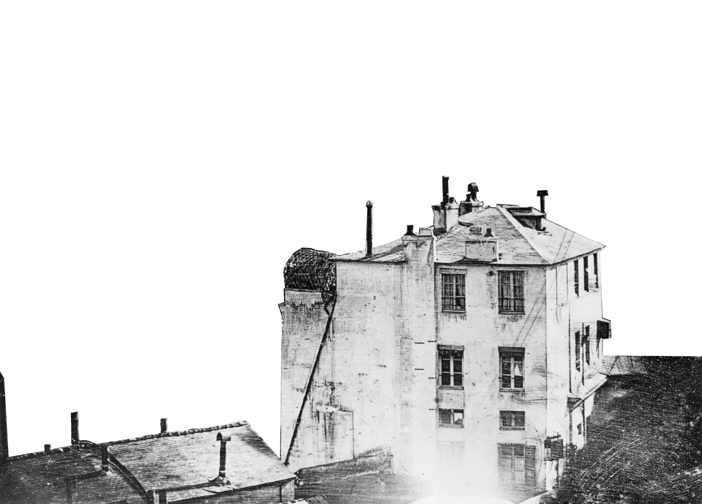
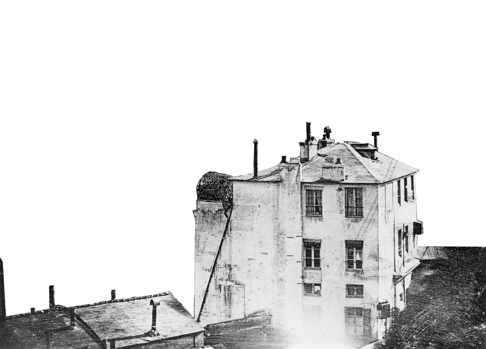

Boulevard du Temple
Looking at the first photograph of a human
 

Louis-Jacques-Mandé Daguerre (1787 - 1851)
also known as Louis Daguerre who was a French scientist, artist and photographer recognized for his invention of the eponymous daguerreotype process of photography. He became known as one of the fathers of photography. Though he is most famous for his contributions to photography, he was also an accomplished painter, scenic designer, and a developer of the diorama theatre.

In 1838 Daguerre took this photo of the Boulevard du Temple, better known at the time as “Crime Boulevard” because of the murders played every night in the dozens of theaters of the boulevard. This is the oldest known photograph of a human being. In a place full of Parisians, this picture does not fix because of the 10 minutes exposure time…
The first person to be photographed
The whole scene was empty because all the surrounding movement was too fast to be captured during the 10 minutes of exposing. Despite all that, a recognizable human form remained motionless enough to be immortalized. One can indeed notice at the left of the pic a man polishing his shoes. The shoe-shine boy also appears, although he is blurred.
Not only a photographer but Louis Daguerre was also known as an inventor, who invented the evolutionary photography method called Daguerretype. He debuted his invention to the French Academy of Sciences and the Académie des Beaux-Arts in 1839, where it was received as a nearly miraculous discovery. Word of the invention spread and today, Daguerre is credited as being one of the fathers of photography. He is also one of the 72 people whose name is inscribed on the Eiffel Tower.